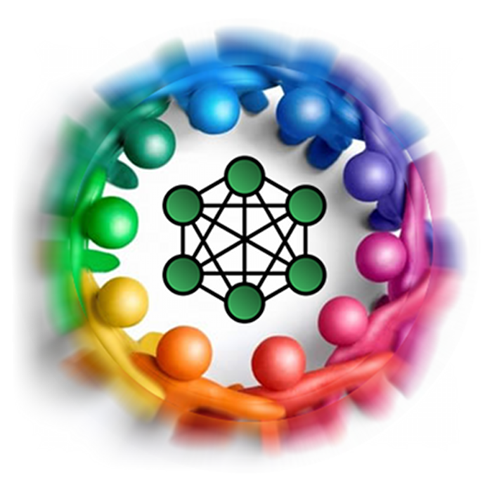

EverMesh
мировое господство бесплатно
s/ high load / p2p /g
попытка разобраться
- почему раньше было всё хорошо
- почему сейчас стало всё плохо
- как мог бы выглядеть идеал
- какими шагами к нему двигаться
Интернет(ы) — TCP/IP
- разработан по заказу DARPA
- создан полностью p2p, отказоустойчивым
- абсолютно открытые протоколы
- успешно коммерциализирован
- доступен 1.67 миллиарду людей
Usenet, E-mail — NNTP, UUCP, SMTP
- спроектированы для надёжной работы по безнадёжному dial-up
- неограниченные объёмы информации
- неограниченное число пользователей
- возникновение глобальных перегрузок практически невозможно
World Wide Web
- хотели как лучше — получилось как всегда
- искусственные центры массового скопления пользователей
- сверхвысокие нагрузки — тяжело подняться и остаться на плаву
- косность на всех уровнях, от технологий до бизнес–моделей
проблема URL=URN=URI
- Uniform Resource Locator, Name, Identifier
- три разных сути ресурса
- в вебе — традиционно жёстко, порочно идентичны друг другу
- сравните с IP: hostname–DNS–CNAME–IP–BGP–OSPF–ARP–MAC
проблема централизации
- бизнес требует посещаемости и полного контроля
- нарушаются основные парадигмы сети
- пользователи сильно зависят от отдельных компаний
- искусственные центры перегружают и сервера, и каналы
проблема Presentation в Web 2.0
- авторам сложно предлагать данные в желаемом виде
- пользователям сложно настроить желаемый вид
- web services в теории должны решать проблему
- на практике рабочих, открытых WS почти нет
- мешают отсутствие стандартов и сложность коммерциализации
проблема “serious business”
- подавляющий процент коммерции — реклама и продажи
- бизнес–модели 19 века, ставка на привлечение масс
- традиционная боязнь чужих нововведений
- традиционно фанатичная закрытость
проблема массовой идеологии
- 2001–2009: знакомство 2/3 населения планеты с IT
- 2010–2019: выход в интернет 99% землян
- для них IT — тормозные сайты, захламленные рекламой
- они не зададут вопросов, просто привыкнут
проблема copyright
- рекламные бизнес-модели против свободного распространения информации
- технические, коммерческие, идеологические препоны кульминируются в законах
- файлообменные сети приравняли «p2p» к коммунизму и преступности
- carriers используют ситуацию для упразднения net neutrality
решения
- популярные пути обхода высоких нагрузок
- открытые сети p2p
- синергия технологий: p2p в браузере
обход высоких нагрузок
- локальный load-balancing кластер
- децентрализация по нескольким ДЦ, глобальный LB
- распределённая международная система
- покупка услуг CDN или строительство своей сети
- весь смысл — подойти ближе к получателю
обмен файлами в p2p-сетях
- 30-90% всего мирового трафика
- очень слабая централизация (для hybrid p2p)
- минимальные нагрузки
- p2p-нагрузка на каналы — полезное явление
p2p и edge-to-edge
- Usenet — edge-to-edge система, солидная доля файлообменного трафика
- кэшируя p2p-трафик, провайдеры практически делают его edge-to-edge
- популярный раньше HTCP — пример рабочего edge-to-edge для HTTP
p2p в браузере
- для начала достаточно встроенного веб-сервера
- Opera Unite, Firefox Plain Old Webserver
- Flash 10 имеет встроенный p2p, есть библиотека для Silverlight 2
- резидентные приложения, ускоряющие любые загрузки
технологии
всё только начинается
технологии–выручалки
- IPv6 — NAT отменяется, Skype отмирает
- SCTP — много маленьких удобств
- HTML5 — локальное хранилище
- Client–side server–side JS
- XMPP message passing в браузере
Flash, Silverlight
современный p2p
- данные — TCP или тонко тюненный UDP
- поиск — гибридные решения или DHT
- безопасность — шифрование и крипто-хэширование
- анонимность — onion routing, Tor, Freenet
Distributed Hash Tables
- семейство несложных алгоритмов поиска и маршрутизации
- масштабирование без ограничений
- гарантированная, быстрая доставка
- потенциально — со скоростью IP или даже быстрее
- работает в вебе: Coral CDN, Amazon, memcached
ресурсы и URIs
- отделение от местонахождения (URL) и имени (URN)
- SHA-UUID — безопасное, глобально-уникальное хэширование
- URL абстрагируется в DHT
- URN и другие мета-данные — как отдельный файл в DHT
- идея не нова: RSS GUIDs, RFC 4122, urn:uuid в атрибутах HTML
структуризация ресурсов
- по компонентам и версиям
- для минимализации изменений и дублирования
- для удобства точных ссылок
концепт EverHash
- UUID-хэши для всего
- единый глобальный namespace
- от отдельных «div» на странице до замены EAN/UPC в жизни
- никакой необходимой централизации
пример uuid/p2p в вебе
<a href="http://..." uuid="abcd...">
ищем файл с метаданными по uuid в DHT, качаем по p2p
в файле один или много uuids непосредственно данных
ищем в DHT, качаем
для небольших файлов метаданные могут быть совмещены с данными для скорости
полная обратная совместимость на переходный период
структуризация интерактивности
- где-то тривиально
- Twitter, сообщения в соцсетях легко соотносятся с XMPP
- где-то непросто
- там, где нужны быстрые, надёжные транзакции
- например — в играх типа MMORPG
быстрые, массовые глобальные транзакции
- их не бывает
- они не нужны
- достаточно ultimately-consistent
p2p-транзакции
- открытые протоколы вместо закрытых сервисов
- жёсткая структуризация данных
- переопределение целостности в качество предела
- определение парадигмы синхронизации
- всё это почти решено в DVCS, Distributed Version Control Systems
mashups как view в MVC
- набирают обороты в enterprise
- Open Mashup Alliance, EMML
- приходят к пользователям
- Yahoo Pipes, Mozilla Ubiquity
- возвращают presentation layer в руки потребителя
- с большими технологическими дивидендами
концепт EverMash
- замена традиционных интерфейсов (CLI/TUI, GUI, Web2.0)
- авто-подстройка mashup-интерфейса по мере работы
- асинхронный, continuous workflow
- единый глобальный источник данных — P2P/DHT
коммерция
- рост интенсивного развития
- переход от push-модели к pull-модели
- от рекламы — к экспертно-аудированной информированности
- продвижение Cloud/Grid/SaaS-решений ближе к пользователям
- аппаратные, программные решения, закрытые приложения-клиенты
- открытые приложения с поддержкой и value-added сервисами
идеология
- открытый доступ к открытой информации
- стандартизация и распространение ws- и mashup-протоколов
- представление информации в руках у пользователя
концепт EverMesh
- полное отсутствие центральных агрегаторов
- связи пользователя определяются любыми желаемыми критериями
- местоположение, социальные связи, спонтанный интерес
- высокие нагрузки — в прошлом :-)
в заключение
расставляя точки над «ы»
когда ждать пришествия?
- все кусочки пазла уже есть и работают
- в академической среде успешно работают несколько цельных проектов
- критическая масса давно набрана
- когда вы перестанете поддерживать ie6? :)
что делать?
- понимать, что мы 20 лет забиваем гвозди микроскопами
- каяться, принять и исповедывать принципы открытости в IT
- когда есть хорошая идея, но нет денег, подумать, как её можно запустить на базе p2p, опубликовать всё надуманное
- внедрять p2p-технологии, даже если пока кажутся лишними
- кстати, OpenID — это тоже по-своему p2p
на что надеяться?
- Google Wave, Opera Unite — принципиально значимые события
- две крупные компании проталкивают p2p в веб
- пока неуклюже, но главное — желание
- прорывы в науке
- пока мы изобретаем велосипеды, они трудятся над межгалактическим гипердрайвом
- алгоритмы глобального p2p/meshing хоть и несложны, но требуют свода теории и экспериментов
что же будет?
всё будет хорошо :)